Structural and electrochemical evaluation of renewable carbons and their composites on different carbonization temperatures for supercapacitor applications
本地阅读版：出版社提交的完整 XML 正文与原图。排版由本项目生成；原始 XML 为证据。不是出版社 PDF。
DOI: 10.1016/j.heliyon.2024.e25628
Abstract
AbstractThis study explored the impact of carbonization temperature (400–700 °C) on the structural and electrochemical performances of H3PO4-activated carbons (ACs) for supercapacitor applications. Advanced characterization techniques, including XRD, Raman, SEM, TEM, FTIR, and BET analysis revealed the structural properties of the ACs. Electrochemical performance was evaluated through cyclic voltammetry (CV), galvanostatic charge discharge (GCD), and electrochemical impedance spectroscopy (EIS) tests. The AC carbonized at 400 °C (AC-400 °C) exhibited outstanding performance with a surface area of 1432.4 m2 g-1 and its electrode delivered a specific capacitance of 183.4 Fg-1 in 6 M KOH electrolyte. It demonstrated remarkable cycle stability (94.3 % retention) at 3 Ag-1 and an energy density (ED) of 4.2 Whkg−1 at a power density (PD) of 137 Wkg-1. Combining AC-400 °C with MnO2 in a 1:1 ratio (AC:MnO2-400 °C) further boosted the electrochemical performance. This composite electrode delivered a significantly higher specific capacitance of 491.3 Fg-1, outstanding cyclic stability of 99.6 % retention at 3 Ag-1, and an exceptional ED of 25.3 Whkg−1 at a PD of 187.3 Wkg-1, surpassing that of AC-400 °C by more than six-fold. This remarkable enhancement highlighted the immense potential of AC-MnO2 composites for high-performance supercapacitors. This study identified 400 °C as the optimal carbonization temperature for maximizing the electrochemical performance of AC electrodes. More importantly, it demonstrated the significant potential of AC:MnO2-400 °C composites for applications in high-performance supercapacitors.Keywords: H3PO4-Activated carbon, Carbonization temperature, Supercapacitor application, Electrochemical performance, AC-MnO2 composite, High-performance supercapacitor
Introduction
P0001
The increasing demand for sustainable and efficient energy storage systems has driven extensive research efforts in the development of high-performance supercapacitors [ [1]]. These devices offer a promising alternative to traditional batteries due to their high power density, rapid charge/discharge rates, and long cycling stability [ [2]]. As the demand for supercapacitors continues to rise, there is a compelling requirement for cost-effective and eco-friendly carbon-based electrode materials.
P0002
This study explores the potential of wood waste from Terminalia elliptica, commonly called ‘Satisal’ in Nepali, is a readily available and fast growing hardwood tree species native to Nepal and the broader South Asian region. Its abundance and rapid growth make it a promising renewable source for producing activated carbon electrodes, aligning with the pursuit of sustainable and renewable energy solutions [ [2]]. Beyond its traditional uses, Terminalia elliptica wood waste possesses inherent characteristics that make it ideal for activated carbon production. Its high cellulose content and robust structure contribute to the development of highly porous and chemically stable carbon materials, crucial for enhancing electrode performance [ [3]].
P0003
Additionally, utilizing Terminalia elliptica as a biomass source aligns with local sustainability initiatives in Nepal and the South Asian region. This approach not only promotes the development of clean energy technologies but also empowers local communities by creating new economic opportunities through responsible waste management.
P0004
Compared to conventional biomass sources like coconut shells or bamboo, Terminalia elliptica offers advantages such as faster growth rates, wider availability, and potentially lower processing costs. Additionally, its inherent physical and chemical properties may lead to the development of unique activated carbon characteristics with superior electrochemical performance [ [4]].
P0005
Motivation: Carbon-based materials have become the preferred choice for supercapacitor electrodes due to their excellent electrical conductivity, high surface area, and chemical stability [ [5]]. However, a significant gap remains in our understanding of how the carbonization temperature, a critical variable in material synthesis, influences the electrochemical performance of renewable carbon electrodes derived from biomass.
P0006
Recent progress: In recent years, there has been a surge of interest in biomass-derived carbon materials as a sustainable alternative to conventional carbon sources [ [6]]. Biomass resources such as agricultural waste, wood, and plant residues, offer a renewable and abundant resource for producing activated carbon (AC) electrodes. However, the carbonization process, especially the temperature at which it is carried out, has a profound influence on the physicochemical properties of the resulting ACs. These properties, such as surface area, porosity, and heteroatom content, are crucial in determining the electrochemical performance of these AC electrodes [ [7]].
P0007
Research objectives: This study aims to bridge this knowledge gap by systematically exploring the relationship between carbonization temperatures and the electrochemical properties of biomass-derived carbon electrodes. The principal research objective is to elucidate how distinct thermal conditions impact the structural characteristics and electrochemical behavior of resulting carbon materials. Furthermore, we aim to identify the optimal carbonization temperature that maximizes the specific capacitance, cyclic stability, and rate capability of the carbon electrodes. In doing so, we aspire to make a substantial contribution to the advancement of high-performance and environmentally friendly supercapacitors.
P0008
Methodology: To understand how carbonization temperature affects the electrochemical performance of activated carbon electrodes, we will examine morphological and structural changes using Scanning electron microscopy (SEM), Transmission Electron Microscopy (TEM), X-ray diffraction (XRD), Raman spectroscopy, Fourier Transform Infrared (FTIR) spectroscopy and, Brunauer-Emmette-Teller (BET) Analysis [ [8]]. We will then employ comprehensive electrochemical analysis techniques including cyclic voltammetry (CV), galvanostatic charge/discharge (GCD) measurements, and electrochemical impedance spectroscopy (EIS) [ [9,10]]. These analyses will allow us to evaluate specific capacitance (ability to store charge per unit area), energy density (amount of energy stored per unit weight), power density (rate at which energy can be delivered), and cycling stability (ability to maintain performance over repeated charge/discharge cycles) of the electrodes. By investigating these factors, we aim to shed light on the underlying mechanisms responsible for the observed variations in electrochemical performance.
P0009
Hybrid-Composite Electrodes: Furthermore, in the realm of supercapacitor performance enhancement, researchers are actively exploring the combination of activated carbons (ACs) with transition metal oxide to create hybrid-composites (HC) [ [11]]. This strategy leverages the synergistic effects of electric double-layer capacitors (EDLC) and pseudocapacitors.
P0010
Among the transition metal oxides, manganese dioxide (MnO2) has emerged as a popular choice for supercapacitor applications due to its affordability, natural abundance, strong redox properties, and non-toxic nature [ [12]]. However, MnO2, suffers from poor conductivity, necessitating its combination with carbonaceous materials to improve electrical conductivity.
P0011
The process of intercalation and de-intercalation within the MnO2 layer plays a key role in achieving faradaic capacitance. Intercalation involves the insertion of K+ ions into the MnO2 material during reduction, while de-intercalation represents the reverse process, where K+ ions are removed as the material undergoes oxidization [ [13,14]]. This redox process is succinctly represented by equation (1):
P0012
Another mechanism involves the surface adsorption of K+ ions onto MnO2, as described by Ref. [14] in equation (2):
P0013
Both of these mechanisms entail a redox reaction between the III and IV oxidation states of manganese.
P0014
In summary, this research aims to provide valuable insights into the optimal carbonization temperature for specific biomass sources, determining the most favorable conditions, particularly, the carbonization temperature, for producing high electrochemical performance activated carbon-electrodes (AC-electrodes). Furthermore, it also involves a comparison between these AC-electrodes with their hybrid-composite counterparts (HC-electrodes) to assess their suitability in supercapacitor applications.
P0015
By addressing this knowledge gap, our goal is to make significant contributions to the development of efficient and sustainable energy storage devices [ [15]]. This effort aligns with the urgent need to meet the growing demand for clean energy solutions while minimizing environmental impact [ [16]].
Experimental procedures
Materials
P0016
For this investigation, wood waste was gathered from local joineries in Kathmandu, Nepal. The analytical-grade activating agent used to prepare the activated carbons was 85 % H3PO4 with a specific gravity of 1.73 g/ml (15.0 M), which was provided by Fischer Scientific, India (P) Ltd. Various chemical reagents (carbon black, polyvinylidene fluoride (PVDF), N-methyl pyrrolidine (NMP), and MnO2 were from Sigma-Aldrich (USA) and APS Ajax Finechem (Australia). The Ni-foam substrate used in the experiments was obtained from PRED MATERIALS International (USA).
Methods: synthesis of activated carbons
P0017
Sundried wood waste was finely ground and sieved (150 μm mesh size). 80 g of powder was mixed with an equal volume of 85 % H3PO4 and wetted at 25 °C for 24 h. This 1:1 ratio, previously determined to yield optimal results, was chosen based on our prior research [ [[17], [18], [19]]]. The mixture was then heated to 110 °C for 2 h, following established synthesis procedures [ [[17], [18], [19]]].
P0018
The prepared sample was divided into four 20 g portions, carbonized individually in separate steel boats at 400 °C, 500 °C, 600 °C, and 700 °C for 3 h each under a continuous 100 mL/min flow N2 in a tube furnace. Omitting a 300 °C carbonization followed recommendations in the literature suggesting its ineffectiveness for AC production [ [20]]. During carbonization, the absence of oxygen facilitated volatile component removal and carbonization. The primary objective was to identify the optimal carbonization temperature for ACs suitable for supercapacitor electrodes.
P0019
Each resulting sample was air-cooled and washed with hot distilled water until neutral pH. After complete drying, the samples were finely powdered again, resulting in four distinct ACs: AC-400 °C, AC-500 °C, AC-600 °C, and AC-700 °C. These ACs were subsequently employed for further structural and electrochemical characterization [ [[17], [18], [19]]].
Instrumentation
P0020
Thermogravimetric analysis (TGA) of raw wood powder was performed using a SDT Q600 Version 20.9, Build 20 thermogravimetric analyzer (USA).
Surface area and pore volume: Brunauer-Emmett-Teller (BET) method (Micromeritics ASAP 2020 system, USA)
P0026
Surface morphology: Scanning electron microscopy (SEM) (Mini SEM nanoeyes, Korea)
P0027
Porous structure: Transmission electron microscopy (TEM) (JEOL JEM 2100) for deeper analysis, complementing SEM insights
Assembly of electrodes
P0028
Four different electrodes were fabricated using a blend of.
P0029
8 mg of each activated carbon (AC) powder (individually for each electrode)
P0030
1 mg of carbon black powder
P0031
1 mg of polyvinylidene fluoride (PVDF) powder
P0032
Maintaining an 8:1:1 ratio (AC:carbon black:PVDF), this mixture was dispersed in 200 mL of N-methyl-2-pyrrolidone (NMP) solution to form a uniform electrode slurry. The slurry was then applied onto a 1 cm2 area of four separate rectangular Ni-foam electrode substrates. After drying overnight in a 70 °C oven, these standardized electrodes were ready for electrochemical testing.
P0033
Additionally, hybrid composite electrodes (HCEs) were prepared following the same procedure, but with a 1:1 ratio of AC to manganese dioxide (MnO2), as suggested by previous research [ [[17], [18], [19],21]]. Similar to the standard electrodes, these HCEs were dried overnight in a 70 °C oven.
P0034
Before further testing, all electrodes, both standard and hybrid-composite, were immersed in a 6 M KOH aqueous electrolyte solution overnight. This crucial step aimed to remove any contaminants and activate the electrode surfaces, ensuring reliable and accurate electrochemical performance [ [[17], [18], [19],21]].
Electrochemical characterizations
P0035
The performances of the four as-fabricated electrodes, hybrid-electrodes (HEs) and MnO2 electrode were evaluated individually using a three-electrode setup in a 6 M KOH aqueous solution. Pt plates and Ag/AgCl served as counter and reference electrodes, respectively. All experiments were conducted at room temperature using a ‘Metrohm Autolab (PGSTAT 302 N) potentiostat/galvanostat’ system [ [[17], [18], [19],21,22]].
P0036
Cyclic voltammetry (CV) analysis provided insights into the redox behavior and charge storage potential of the electrodes. Measurements were conducted within a potential window of −1.0 to −0.2 V at various scan rates (2, 5, 10, 20, 50, and 100 mV s−1) [ [23,24]].
P0037
Galvanostatic charge-discharge (GCD) tests assessed the electrodes' charge/discharge performance at different current densities (1, 2, 3, 5, 10, 15, and 20 Ag-1). Cyclic stability (% retention) was estimated based on data from these tests [ [21,22,25]].
P0038
Electrochemical impedance spectroscopy (EIS) data, acquired using a 10 mV perturbation signal across a frequency range of 100 kHz to 0.1 Hz, provided insights into the impedance characteristics of the electrodes and the resistance within the system [ [[21], [22], [23]]]. The data was analyzed using the Nova 1.11 program.
Results and discussion
Structural analysis of activated carbons
Thermogravimetric analysis (TGA) of raw wood powder
P0039
Fig. 1 shows the TGA curve of raw wood powder from Terminalia elliptica, revealing distinct breakdown stages as discussed below.
P0040
Moisture Evaporation: An initial minor weight loss around 100 °C corresponds to the typical moisture removal range for wood.
P0041
Hemicellulose Degradation: Between 200 and 400 °C, the weight loss visually depicted in Fig. 1 indicates the degradation of hemicellulose, a key wood component.
P0042
Cellulose Decomposition: A noticeable weight loss between 300 and 400 °C signifies the decomposition of cellulose, another major component, in organic volatile substances present in the raw wood powder [ [26]].
P0043
Optimal activation: A substantial weight loss exceeding 60 % at around 400 °C suggests substantial chemical transformations, indicating the optimal activation temperature for AC production from this wood powder. Beyond this point, the weight remains stable, confirming 400 °C as the ideal temperature for AC production from Terminalia elliptica wood powder.
P0044
TGA curve of raw wood powder of Terminalia elliptica.
Optimal activation temperature confirmed through TGA
P0046
Building on the TGA results, we aimed to validate 400 °C as the ideal carbonization temperature for producing ACs from the H3PO4-activated raw wood powder. To investigate this, the material was divided into four portions, each carbonized at 400 °C, 500 °C, 600 °C, and 700 °C. The resulting ACs (AC-400 °C, AC-500 °C, AC-600 °C, and AC-700 °C) were then comprehensively characterized using various instrumental techniques (XRD, Raman spectroscopy, FTIR spectroscopy, SEM, TEM, and BET analysis).
X-ray diffraction (XRD)
P0047
Fig. 2 showcases the X-ray diffraction pattern of the activated carbon prepared at different temperatures. Notably, the pattern for AC-400 °C displays a broader hump compared to those for AC-500 °C, AC-600 °C, and AC-700 °C. This observation indicates a higher degree of amorphousness in the carbon structure synthesized at 400 °C.
P0048
XRD of activated carbons prepared for analysis.
P0050
The increasing sharpness and narrowing of the peaks with increasing carbonization temperature beyond 400 °C suggest a transition towards more ordered crystalline structures [ [19,27]]. This process known as “graphitization”, aligns carbon atoms into hexagonal layers similar to graphite. While this orderly arrangement reduces the amorphous character, it can also come at the expense of certain desirable properties like surface area and pore volume, which are crucial for some applications of activated carbon [ [21,28]].
P0051
In conclusion, the XRD analysis reveals a trade-off between the degree of amorphousness and the level of carbon ordering achieved at different temperatures. While AC-400 °C exhibits a more amorphous structure, potentially offering advantages in terms of surface area and porosity, the higher temperatures promote graphitization and a more organized crystalline structure, which might impact certain functionalities [ [29,30]].
Raman scattering analysis
P0052
Complementing the insights from XRD, Raman spectroscopy provides valuable information about the vibrational modes of atoms and molecules within the material, revealing details about its bonding and disorder. In Fig. 3, the Raman spectra of the activated carbons highlight characteristic peaks relevant to carbon structures.
P0053
Raman spectra of activated carbons prepared for analysis.
P0055
A prominent D-band observed in the spectrum of AC-400 °C signifies the presence of disordered sp2 carbon, frequently encountered in amorphous materials. The intensity of this band reflects the degree of disorder, and notably, the G/D ratio for AC-400 °C is less than 1 (0.97), indicating a relatively high level of defect-rich amorphous character. In contrast, we expect higher-temperature ACs (500, 600, and 700 °C) to exhibit lower amorphosity and a more ordered structure. Consequently, their spectra are likely to show intensified G-bands, corresponding to ordered sp2 carbon, leading to G/D ratios exceeding 1, as suggested by Fig. 3. This shift highlights the transition towards a more graphitic structure with increasing carbonization temperature.
P0056
To summarize, the Raman analysis reveals that AC-400 °C possesses a higher degree of disorder and amorphousness, evidenced by its low G/D ratio and dominant D-band. Conversely, the higher-temperature ACs exhibit G/D ratios greater than 1, suggesting a less amorphous and more organized graphitic character due to increased carbon ordering at higher temperatures [ [31]].
Fourier Transform Infrared (FTIR) spectroscopy
P0057
Fig. 4 presents the FTIR spectra of the prepared ACs, revealing insights into the chemical composition and structural characteristics.
P0058
FTIR spectra of activated carbons prepared for analysis.
P0060
Notably, AC-400 °C and AC-500 °C exhibit prominent hydroxyl (OH) groups around 3400 cm−1, likely due to surface functionalization or adsorbed water molecules. These groups can influence surface chemistry, wettability, and interaction with electrolytes in supercapacitor applications [ [32]]. In contrast, AC-600 °C and AC-700 °C do not show significant hydroxyl peaks, presumably due to their higher treatment temperatures leading to desorption or decomposition of these functional groups, resulting in a more carbonized structure [ [32]].
P0061
The spectra also showcase characteristic bands in the regions associated with various functional groups.
P0062
C <svg xmlns="http://www.w3.org/2000/svg" version="1.0" width="20.666667pt" height="16.000000pt" viewBox="0 0 20.666667 16.000000" preserveAspectRatio="xMidYMid meet"><metadata> Created by potrace 1.16, written by Peter Selinger 2001-2019 </metadata><g transform="translate(1.000000,15.000000) scale(0.019444,-0.019444)" fill="currentColor" stroke="none"><path d="M0 520 l0 -40 480 0 480 0 0 40 0 40 -480 0 -480 0 0 -40z M0 360 l0 -40 480 0 480 0 0 40 0 40 -480 0 -480 0 0 -40z M0 200 l0 -40 480 0 480 0 0 40 0 40 -480 0 -480 0 0 -40z"/></g></svg> C at 2239 cm−1 and C <svg xmlns="http://www.w3.org/2000/svg" version="1.0" width="20.666667pt" height="16.000000pt" viewBox="0 0 20.666667 16.000000" preserveAspectRatio="xMidYMid meet"><metadata> Created by potrace 1.16, written by Peter Selinger 2001-2019 </metadata><g transform="translate(1.000000,15.000000) scale(0.019444,-0.019444)" fill="currentColor" stroke="none"><path d="M0 520 l0 -40 480 0 480 0 0 40 0 40 -480 0 -480 0 0 -40z M0 360 l0 -40 480 0 480 0 0 40 0 40 -480 0 -480 0 0 -40z M0 200 l0 -40 480 0 480 0 0 40 0 40 -480 0 -480 0 0 -40z"/></g></svg> N around 2331 cm−1 suggest the presence of nitrogen containing functional groups, known to enhance supercapacitor performance through improved electrical conductivity and pseudocapacitance [ [33]].
P0063
Aromatic C <svg xmlns="http://www.w3.org/2000/svg" version="1.0" width="20.666667pt" height="16.000000pt" viewBox="0 0 20.666667 16.000000" preserveAspectRatio="xMidYMid meet"><metadata> Created by potrace 1.16, written by Peter Selinger 2001-2019 </metadata><g transform="translate(1.000000,15.000000) scale(0.019444,-0.019444)" fill="currentColor" stroke="none"><path d="M0 440 l0 -40 480 0 480 0 0 40 0 40 -480 0 -480 0 0 -40z M0 280 l0 -40 480 0 480 0 0 40 0 40 -480 0 -480 0 0 -40z"/></g></svg> C bonds at 1590 cm−1 contribute to the stability and conductivity of the carbon materials [ [33]].
P0064
C–O bonds around 1022 cm−1 can enhance surface reactivity and capacitance in supercapacitors [ [34]].
P0065
C–H bonds at 672 cm−1 indicate the presence of aliphatic hydrocarbons or chains, potentially contributing to the overall surface area and chemical reactivity of the carbon.
P0066
These diverse functional groups play a crucial role in tailoring the properties of ACs for supercapacitor applications. They contribute to increased surface area, improved electrochemical reactivity, and enhanced electrical conductivity, leading to efficient energy storage and delivery [35].
Scanning electron microscopy (SEM)
P0067
Fig. 5 showcases the SEM micrographs of the prepared ACs at x2.0 k (20,000x). magnification, revealing their porous morphology.
P0068
SEM images of activated carbons prepared for analysis.
P0070
Notably, AC-400 °C and AC-500 °C exhibit well-defined networks of interconnected pores, ranging in size from micropores to mesopores. This observation suggests that the 400–500 °C temperature range effectively promotes pore development during activation without causing significant pore collapse [ [21,36]].
P0071
In contrast, the SEM images of AC-600 °C and AC-700 °C show a less pronounced porous structure. This phenomenon is likely due to the detrimental effects of excessive temperature on pore stability. Higher carbonization temperatures can lead to pore collapse or closure due to structural rearrangements within the carbon framework, ultimately reducing the material's porosity and adsorption capacity [ [22,36]].
P0072
Therefore, based on the SEM analysis, temperatures in the range of 400–500 °C seem optimal for achieving the desired porous structure in wood-based ACs. This range effectively balances the creation of new while preserving the integrity of existing ones, making it suitable for the successful production of porous wood-based ACs.
Transmission Electron Microscopy (TEM)
P0073
Complementing the SEM analysis, TEM provides a deeper exploration into the fine details of the activated carbons (ACs) porous structures. This is crucial for understanding how carbonization temperature influences the pore characteristics and, consequently, the adsorption capacity of wood-based ACs.
P0074
Fig. 6 presents the TEM images of the ACs at x5.0 k (50,000×) magnification, showcasing the intricate networks of pores and their distribution, revealing insights beyond the reach of SEM.
P0075
TEM images of activated carbons prepared for analysis.
P0077
This TEM analysis confirms that 400 °C offers the most favorable conditions for achieving the desired porous structure. At this temperature, well-defined and accessible pores optimize the material's adsorption potential. Increasing the temperature to 500 °C reveals signs of structural degradation, allowing for effective adsorption. Notably, at 500 °C, the structure shows signs of degradation, with less pronounced pores suggesting a suboptimal morphology for our target application.
P0078
Beyond 500 °C, detrimental effects of higher temperature become even more evident. The TEM images indicate a significant reduction in pore volume and potential pore collapse, likely due to the destabilization of the porous network by the intense carbonization process. This further reinforces the conclusion that 400 °C stands out as the most effective temperature for maximizing pore development and achieving the desired porous structure for wood-based activated carbon [ [19,20]].
Brunauer-Emmette-Teller (BET) analysis
P0079
Fig. 7 presents the N2 adsorption-desorption isotherms at 77 K for the prepared ACs. These isotherms provide valuable insights into their specific surface area by measuring the amount of gas molecules that can form a single layer (monolayer) on their surface.
P0080
N2 adsorption/desorption isotherms at 77 K of activated carbons prepared for analysis at different carbonization temperatures.
P0082
AC-400 °C and AC-500 °C display characteristic type II isotherms with minimal nitrogen uptake at low pressures indicating the presence of relatively few micropores. However, a marked increase in nitrogen adsorption around P/P0 = 0.5 accompanied by a hysteresis loop signifies the presence of mesopores (typically 2–50 nm), consistent with findings [ [27,37]]. AC-400 °C exhibits a larger hysteresis loop and continues to adsorb nitrogen until higher pressures, suggesting a more significant mesoporous structure compared to AC-500 °C. This translates to a higher surface area for AC-400 °C (1300 m2/g) due to its abundant mesopores offering a larger adsorption surface [ [38]].
P0083
In contrast, AC-600 °C and AC-700 °C lack hysteresis loops, highlighting a dominant presence of micropores or reduced number of mesopores. AC-600 °C possesses a moderate surface area, (280 m2/g), while AC-700 °C shows the lowest (67 m2/g), indicating a substantial loss of mesopores at higher temperatures [ [39]].
P0084
These observations highlight the significant influence of carbonization temperature on AC structure. Higher temperatures can close mesopores and promote micropore formation, leading to a reduction in surface area, as suggested by the lack of hysteresis loops at 600 °C and 700 °C. AC-600 °C shows a moderate surface area decrease, while AC-700 °C exhibits the most significant loss, reflecting the collapse or transformation of mesopores into micropores [ [20,21,27]].
P0085
Structural characterization using XRD, Raman spectroscopy, and FTIR revealed AC-400 °C's optimal porosity and surface area, making it stand out from the others. While AC-500 °C showed similar characteristics, higher temperatures led to reduced performance due to pore loss and structural changes. AC-400 °C's exceptional morphology suggests promising electrochemical potential, particularly in enhancing energy storage for supercapacitors. Therefore, its electrochemical behavior was further investigated through cyclic voltammetry (CV), galvanostatic charge/discharge (GCD), and electrochemical impedance spectroscopy (EIS).
Evaluation of the electrochemical performances of activated-carbon and hybrid-composite-electrodes
P0086
The electrochemical performances of the four activated-carbon-electrodes (AC-400 °C, AC-500 °C, AC-600 °C, and AC-700 °C), and four hybrid-composite-electrodes AC:MnO2-400 °C, AC:MnO2-500 °C, AC:MnO2-600 °C, and AC:MnO2-700 °C) were measured, compared, and assessed for their findings.
Cyclic voltammetry (CV) analysis
P0087
Fig. 8a and 8b present CVs for AC-electrodes and their corresponding hybrid-composite-electrodes (HC-electrodes) with MnO2, using a scan rate of 100 V/s in a 6 M aqueous KOH electrolyte. The potential window for AC-electrodes covers −1 to −0.2 V, while HC-electrodes span −1.2 to 0 V. It's worth noting that CVs were performed at various scan rates (2 mVs−1, 5 mVs−1, 10 mVs−1, 20 mVs−1, and 50 mVs−1), but those results aren't shown in the figures.
P0088
a: CVs of AC-electrodes at a 100 V/s scan rate, potential window −1 to −0.2 VFig. 8b: CVs of HC-electrodes at a 100 V/s scan rate, potential window −1.2 to 0 V.
P0091
The electrochemical behavior of electrodes at different carbonization temperatures (400 °C, 500 °C, 600 °C, and 700 °C) reveals the following key characteristics:
P0092
AC electrodes (Fig. 8a).
P0093
AC-400 °C electrode (black line): shows a large rectangular loop indicative of robust electrical double-layer capacitive (EDLC) behavior with a high specific capacitance [ [22,23]]. Notably, a peak current density of 12 Ag-1 suggests faster ion adsorption/desorption kinetics.
P0094
AC-500 °C (red line): Exhibits a slightly smaller loop area compared to AC-400 °C but retains the rectangular shape, signifying good EDLC behavior.
P0095
AC-600 °C and AC-700 °C (blue and pink lines): Possess narrower loop areas and significantly reduced current densities (2.6 Ag-1 and 1.2 Ag-1, respectively), implying diminished EDLC performance.
P0096
HC (AC:MnO2) electrodes (Fig. 8b).
P0097
HC-400 °C: Displays pronounced redox peaks due to MnO2 inclusion, showcasing its reversible Mn³⁺/Mn2⁺ conversion reaction [ [21,22]]. Consequently, the current density reaches nearly 20 Ag-1, highlighting enhanced charge storage due to combined EDLC and pseudocapacitive mechanisms.
P0098
HC-500 °C: Exhibits redox peaks similar to HC-400 °C, while retaining EDLC characteristics observed in the corresponding AC electrode.
P0099
HC-600 °C: While redox peaks are still present, their intensity diminishes compared to HC-400 °C and HC-500 °C. This suggests a decrease in the contribution of pseudocapacitance from MnO2 due to potential changes in its morphology or surface area at higher carbonization temperatures. The current density also drops, likely reflecting reduced ion accessibility and slower kinetics.
P0100
HC-700 °C: Redox peaks become barely noticeable, indicating minimal pseudocapacitive contribution from MnO2 at this temperature. The CV curve approaches a rectangular shape similar to AC-600 °C and AC-700 °C, signifying dominance of EDLC behavior. However, the current density remains lower than those observed for the AC electrodes at similar temperatures, suggesting potential detrimental effects of high carbonization on the overall electrode architecture and ion transport within the composite [ [21,23,37]].
Influencing factors
P0101
Carbonization temperature: Lower temperatures (400 °C and 500 °C) promote well-developed porous structures in ACs, leading to higher specific surface areas and enhanced EDLC behavior [ [23,27,37]].
P0102
Specific Surface Area: The rectangular CV curves and large loop areas of AC-400 °C and AC-500 °C electrodes suggest higher specific surface areas, enabling greater charge storage through electrostatic interactions at the electrode-electrolyte interface [ [21,24,27,39]].
P0103
Truncated Current Densities: AC-600 °C and AC-700 °C electrodes exhibit lower charge storage capacity due to reduced surface areas and possibly decreased pore accessibility, limiting ion access and hindering efficient ion adsorption/desorption [ [37,38]].
P0104
Absence of Faradaic Peaks: In all electrodes, the absence of additional peaks beyond the Mn³⁺/Mn2⁺ conversion peaks in HC electrodes confirms the dominance of non-faradaic EDLC behavior during charge/discharge cycles [ [19,39]].
P0105
Conclusion: Carbonization temperature significantly impacts the porous structure and specific surface area of ACs, ultimately influencing their electrochemical performance. The CVs primarily suggest EDLC mechanisms, with variations in specific surface area and charge storage capacity across different temperatures. Notably, HC-400 °C demonstrates promising enhanced charge storage through combined EDLC and pseudocapacitive contributions.
Galvanostatic charge/discharge (GCD) study
P0106
The charge-discharge curves at a current densities of 1Ag-1 for both activated carbon (AC-400 °C) and hybrid-composite (AC:MnO2-400 °C) electrodes are presented in Fig. 9.
P0107
a: GCD curves of AC-electrodes at current densities of 1Ag-1Fig. 9 b GCD curves of HC-electrodes at current densities of 1Ag-1
P0110
Examining Fig. 9 a, the GCD curves of AC electrodes exhibit distinct triangular profiles, characteristic of Electric Double-Layer Capacitors (EDLCs) [ [21,22]]. This triangular shape indicates minimal impurities and successful electrolyte ion insertion within the electrode material [ [22,38]]. Notably, the discharge times for AC-400 °C and AC-500 °C were approximately 120 s and 75 s, respectively, yielding specific capacitance values of 183.4 Fg-1 and 137.4 Fg-1 at 1 Ag-1 (calculated using Equation (1), relating Cs to current density, time duration, loading mass, and potential window). The remaining two ACs’ discharge times and specific capacitances are detailed in Table 1.
P0111
Comparison of Discharge Time and Specific Capacitance for Activated carbon (AC) and Hybrid-composite-electrodes at Different carbonization temperatures.
P0113
AC-ElectrodesDischarge time (s)Specific Capacitance (Fg−1)Hybrid-composite-ElectrodesDischarge time (s)Specific Capacitance (Fg−1)AC-400°C110184.4AC:MnO2-400°C490491.0AC-500°C95137.4AC:MnO2-500°C400366.3AC-600°C6887.3AC:MnO2-600°C120103.0AC-700°C4541.1AC:MnO2-700°C6569.4
P0114
In contrast, the GCD response of HC electrodes as depicted in Fig. 9b, a bending nature emerged at a current density of 1 Ag-1, resembling pseudocapacitive behavior attributed to internal oxidation-reduction reactions in MnO2 [ [27,40]]. However, the curve exhibited excellent symmetry, indicating remarkable charge-discharge reversibility. The discharge times for AC:MnO2-400 °C and AC:MnO2-500 °C were approximately 490s and 400s, resulting in specific capacitance values of 491 Fg-1 and 366.3 Fg-1, respectively [ [27,39,40]]. The comparison of discharge times and specific capacitances for AC and hybrid-composite electrodes at different carbonization temperatures can be found in Table 1.
P0115
Clearly, HCs achieved significantly higher specific capacitances compared to the individual AC electrodes. Among the AC electrodes, AC-400 °C performed the best, while AC:MnO2-400 °C excelled among the hybrid composite electrodes. This superior performance can be attributed to synergistic combination of AC and MnO2, where non-faradaic (EDLC) and faradaic (redox) mechanisms work effectively together.
P0116
In conclusion, discharge time and specific capacitance trends were influenced by factors, such as synthesis temperature, porosity, impurities, wetting characteristics, and ion diffusion kinetics. These factors shaped the electrochemical behavior of the carbon electrodes. While this study provides valuable insights, further research could explore the long-term cycling stability and scalability of these materials for practical energy storage applications.
Cyclic stability assessment
P0117
Evaluating the long-term performance of supercapacitor electrodes is crucial. Therefore, we assessed the cyclic stability of our electrodes by monitoring their capacity retention (%) over 1000 consecutive charge-discharge cycles at a current density of 3 Ag-1. Fig. 10a and b depict the capacity retention results for both activated carbon (AC) and hybrid-composite (AC:MnO2) electrodes.
P0118
a: Capacity retention (%) of AC-electrodes,Fig. 10 b: Capacity retention (%) of AC:MnO2-electrodes.
P0121
For ideal supercapacitors, maintaining a high and stable capacitance over extended cycles is essential. Interestingly, all electrodes exhibited an initial stabilization phase, where capacitance remained relatively constant until approximately 200 cycles. However, beyond 200 cycles, a gradual decline in specific capacitance was observed for all samples. Notably, the decrease after 1000 cycles varied significantly across the AC electrodes: 4 % for AC-400 °C, 9.7 % for AC-500 °C, 23.6 % for AC-600 °C, and 40.8 % for AC-700 °C. This capacity loss is often attributed to the gradual decomposition of electroactive materials into the electrolyte during repeated charging and discharging. Over time, these cycles can lead to material breakdown and dissolution, ultimately reducing overall capacitance [ [41]].
P0122
The hybrid-composite-electrodes (AC:MnO2-electrodes) presented a remarkably consistent trend in cyclic stability. In particular, the AC:MnO2-400 °C electrode showcased exceptional performance, retaining 99.4 % of its initial capacitance after 1000 cycles. This outstanding stability can be attributed to the presence of MnO2 in the composite. MnO2's intrinsic pseudocapacitive behavior and redox reactions likely play a crucial role in mitigating excessive material degradation during cycling, making it a promising candidate for applications demanding long cycle life [ [22,42]]. Interestingly, the AC-400°C-electrode without MnO2 addition, also demonstrated respectable cyclic stability, maintaining 97.1 % of its initial capacitance. This suggests that both carbonization temperature and material composition influence long-term performance.
Understanding the internal resistance within electrochemical systems is crucial for optimizing performance. To gain insights into this aspect, we conducted EIS measurements on both activated carbon (AC) and hybrid-composite (AC:MnO2) electrodes. These measurements were performed in a 6 M KOH aqueous solution over a frequency range of 100 KHz to 0.1 Hz. The resulting Nyquist plots (Fig. 11a and b), provide valuable information about the impedance behavior of these electrodes.
P0124
a and 11. b: Nyquist plots of the AC-electrodes and AC:MnO2-electrodes at the perturbation signal with 10 mV AC voltage in 6 M KOH aqueous solution at frequencies ranging from 100 KHz to 0.1 Hz.
P0126
The observed impedance patterns in the Nyquist plots reveal distinct characteristics. At high-frequencies, an incomplete semicircular curve appears, reflecting the presence of polarization resistance. This resistance arises from the transfer of electrolyte ions into the porous electrode material. In contrast, the low-frequency region exhibits a linear curve indicative of capacitive behavior, consistent with previous research [ [43,44]].
P0127
Further analysis of these plots reveals a clear trend. The AC-400°C-electrode (Fig. 11 a) displays superior conductivity compared to its counterparts (AC-500°C-electrode, AC-600°C-electrode, and AC-700 °C).
P0128
This superiority is evident in its remarkably lower internal resistance, approximately 0.41Ω, compared to the other AC electrodes. This enhanced performance can be attributed to its higher specific capacitance (as discussed previously), which facilitates efficient movement of ions and electrons within the electrode structure, thereby improving overall conductivity [ [45]].
P0129
Conversely, the other AC electrodes exhibit higher internal resistances, ranging from 0.48 Ω to 0.73 Ω. These higher resistances are directly related to their comparatively lower specific capacitance.
P0130
Similarly, among the HC electrodes (Fig. 11b), AC:MnO2-400 °C stands out with a significantly lower resistance of 0.36 Ω compared to the AC-400°C-electrode. The lower resistance in AC:MnO2-400 °C is again a consequence of its high specific capacitance, leading to better ion transport and, consequently, enhances conductivity.
P0131
Therefore, the EIS analysis highlights the advantage of preparing AC electrodes at 400 °C (AC-400°C-electrode) compared to higher carbonization temperatures. The strong correlation between internal resistance and specific capacitance emphasizes their key roles in influencing electrode conductivity. The insights are valuable for further development and optimization of electrochemical systems [ [46]].
Assessment of energy and power density
P0132
Energy density (ED) and power density (PD) are crucial metrics for evaluating the performance of any electrochemical energy storage device. ED measures the amount of energy stored per unit mass or volume, while PD quantifies the rate at which energy can be delivered or absorbed.
P0133
To assess these parameters for both AC and hybrid-composite (AC:MnO2) electrodes, Ragone plots were constructed based on GCD measurements (Fig. 12a and b).
P0134
a and b: Ragone plot of AC-electrodes and AC:MnO2-electrodes.
P0136
The results are summarized in Table 2, with ED and PD calculated using equations (2), (3).
P0137
Where, the energy density, ED, is in Whkg−1, the power density, PD, is in Wkg−1, the specific capacitance, Csp, is in Fg−1, in the potential window ΔV, and discharge time Δt (s).
P0138
Specific capacitance, energy density, power density, capacity retention (%), and ESR of AC-400°C-electrode and AC:MnO2-electrodes.
P0140
AC-ElectrodesEnergy density (Whkg−1)Power density (Wkg−1)Hybrid-composite-ElectrodesEnergy density (Whkg−1)Power density (Wkg−1)AC-400 °C4.2142.4AC:MnO2-400 °C25.3187.3AC-500 °C3.1127.4AC:MnO2-500 °C18.3164.4AC-600 °C2.2112.0AC:MnO2-600 °C5.2156.1AC-700 °C1.3104.2AC:MnO2-700 °C2.5149.5
P0141
Notes.
P0142
In the three-electrode setup the working electrode stores most of the energy, leading to a factor of 8 instead of 2 in the ED calculation. This emphasizes the efficiency compared to two-electrode systems where energy is equally distributed.
P0143
ESR stands for equivalent series resistance, which contributes to power loss and affects PD [ [17,[21], [22], [23],47,48]].
P0144
Key findings.
P0145
Among AC electrodes, AC-400 °C exhibited the highest ED (4.2 Whkg−1) at a PD of 144 Wkg-1, followed by AC-500 °C (3.1 Whkg−1at 127.3 Wkg-1).
P0146
Hybrid-composite AC:MnO2-400 °C displayed a significantly higher ED of 25.3 Whkg−1 compared to the non-hybridized AC-400 °C, highlighting the synergetic effect of MnO2.
P0147
Both AC-400 °C and AC:MnO2-400 °C demonstrated exceptional ED and PD values, making them promising candidates for energy storage applications.
P0148
Factors contributing to superior performance.
P0149
Moderate carbonization temperature (400°C): Optimizes surface area and porosity for efficient ion adsorption and charge storage.
P0150
Electrochemical activity: AC-400 °C retains its activity, ensuring efficient charge transfer during reactions.
P0151
Synergy in hybrid-composite electrodes: MnO2 in AC:MnO2 enhances capacitance, charge transport, and electrode stability, reducing internal resistance and improving long-term performance [ [17,[21], [22], [23],49,50]].
P0152
The calculated values of specific capacitance, energy density, power density, capacity retention (%), and ESR of AC-400°C-electrode and AC:MnO2-electrodes are listed in Table 2 as a whole.
Conclusion
P0153
Carbonization Temperature: The study clearly demonstrates the significant impact of carbonization temperature on the structural properties and electrochemical performance of H3PO4-activated carbons. By employing a range of analytical techniques like XRD, Raman spectroscopy, and BET, we established detailed correlations between temperature and key characteristics like surface area and porosity.
P0154
Optimal Performance at 400°C: The AC electrode prepared at 400 °C (AC-400 °C) emerged as the top performer, showcasing exceptional properties: a high surface area of 1432.4 m2g⁻1, specific capacitance of 183.4 Fg⁻1 in a 6 M KOH electrolyte and, impressive cyclic stability (94.3 % at 3 Ag⁻1).
P0155
Energy Density and Stability: Notably, AC-400 °C exhibited a promising energy density of 4.2 Whkg⁻1 at 137 Wkg⁻1, highlighting its potential for practical applications.
P0156
Hybrid composite Enhancement: Integrating MnO2 in a 1:1 ratio (AC:MnO2-400 °C) significantly boosted the AC's electrochemical performance. This hybrid composite electrode displayed a remarkable increase in specific capacitance (491.0 Fg⁻1), maintained exceptional cyclic stability (99.6 % at 3 Ag⁻1), and achieved a substantially higher energy density of 25.3 Whkg⁻1 at 187.3 Wkg⁻1 compared to its non-hybridized counterpart.
P0157
Optimal Temperature and Future Prospects: Our findings strongly suggest that 400 °C is the ideal carbonization temperature for crafting AC electrodes with superior electrochemical characteristics compared to higher temperatures (500, 600, and 700 °C). Furthermore, the remarkable success of the AC:MnO2-400 °C hybrid composite opens exciting avenues for developing advanced energy storage devices with enhanced performance and stability.
CRediT authorship contribution statement
P0158
Dibyashree Shrestha: Conceptualization.
Declaration of competing interest
P0159
I hereby declare that there is no conflict of interest and it has not been submitted anywhere else.
Acknowledgements
P0160
Deepest gratitude is extended to the Central Department of Chemistry, Tribhuvan University, and Patan Multiple Campus, Tribhuvan University, Patan dhoka, Lalitpur, Nepal, for providing essential laboratory facilities and a supportive environment for the research conducted. Their commitment to academic excellence and facilitating scientific exploration was instrumental in achieving valuable results. In Thailand, sincere thanks are offered to the Advanced Functional Material Physics Laboratory at Suranaree University of Technology-in facilitating electrochemical measurements for their invaluable expertise in material characterization. Their assistance proved crucial in uncovering the properties of the materials examined. The research also benefited greatly from the generous support of the Global Research Laboratory at Sun Moon University, South Korea-for their invaluable expertise in material characterization, in facilitating electrochemical measurements. Their collaboration and willingness to share resources greatly advanced the research objectives.
References
原文图表（含文末 floats-group）
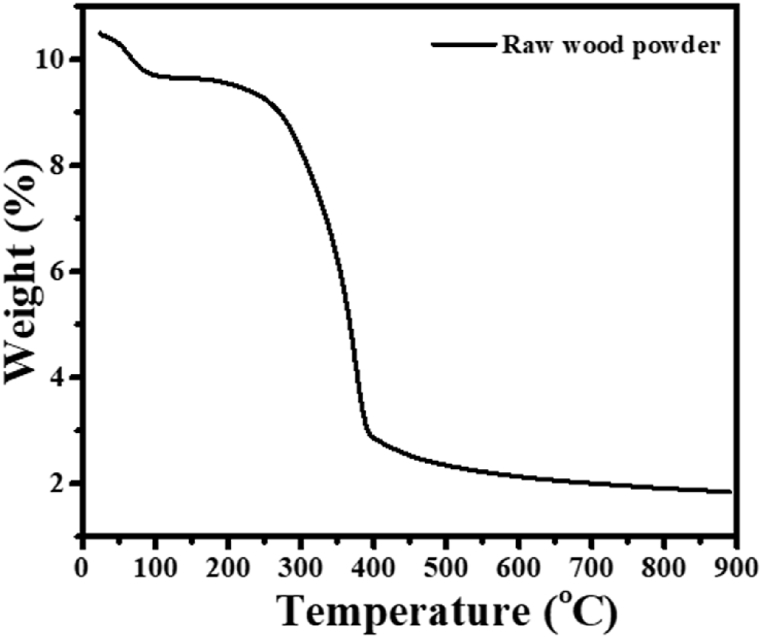
Fig. 1TGA curve of raw wood powder of Terminalia elliptica.Fig. 1
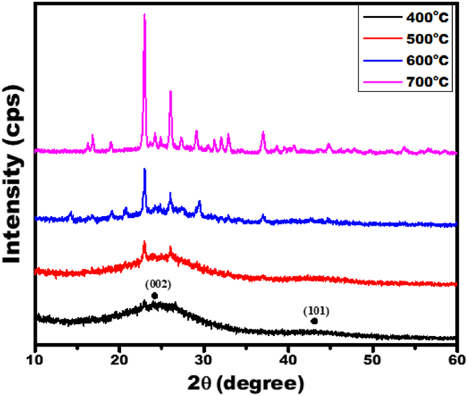
Fig. 2XRD of activated carbons prepared for analysis.Fig. 2
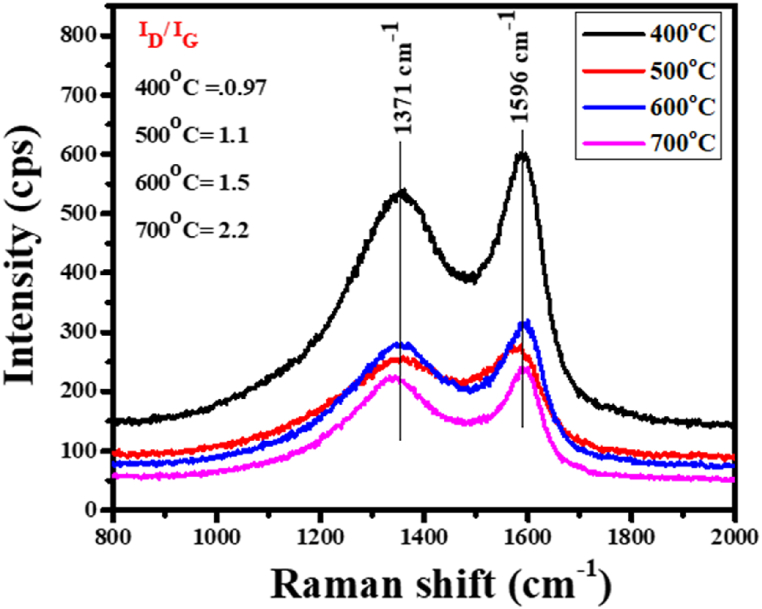
Fig. 3Raman spectra of activated carbons prepared for analysis.Fig. 3
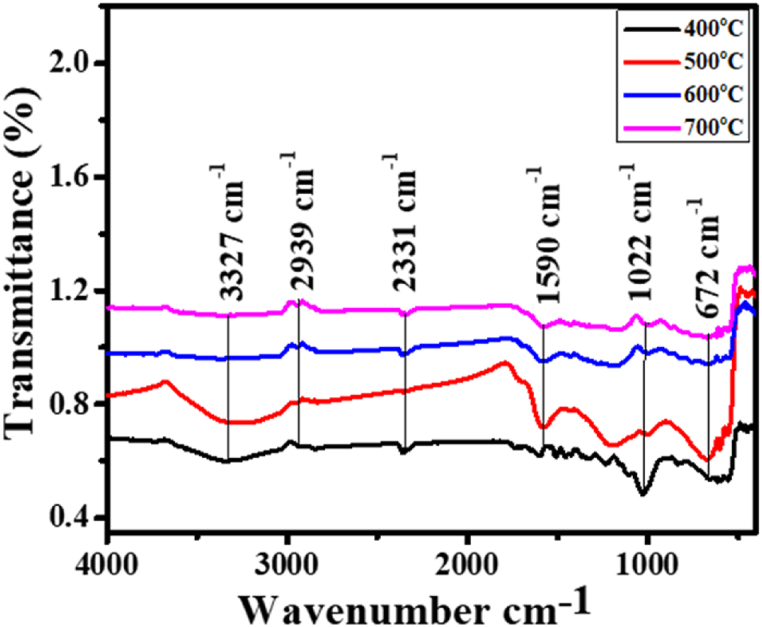
Fig. 4FTIR spectra of activated carbons prepared for analysis.Fig. 4
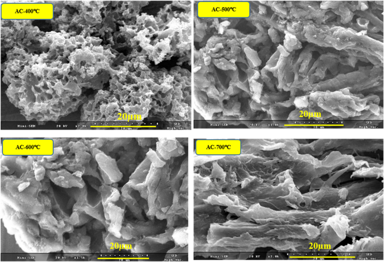
Fig. 5SEM images of activated carbons prepared for analysis.Fig. 5
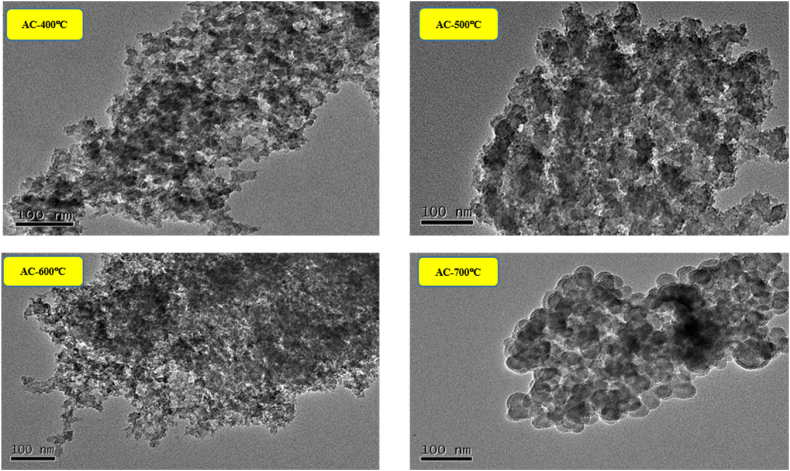
Fig. 6TEM images of activated carbons prepared for analysis.Fig. 6
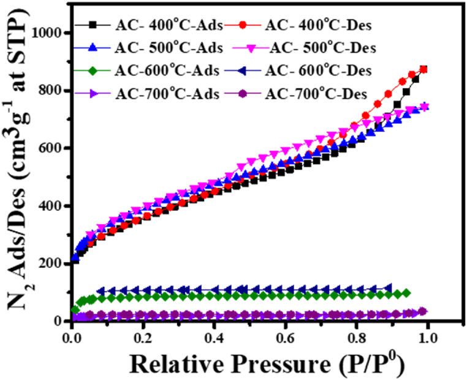
Fig. 7N2 adsorption/desorption isotherms at 77 K of activated carbons prepared for analysis at different carbonization temperatures.Fig. 7
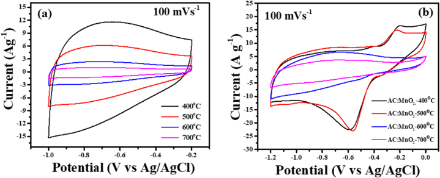
Fig. 8a: CVs of AC-electrodes at a 100 V/s scan rate, potential window −1 to −0.2 VFig. 8b: CVs of HC-electrodes at a 100 V/s scan rate, potential window −1.2 to 0 V.Fig. 8
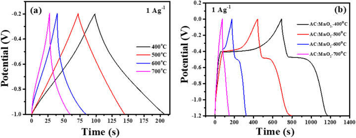
Fig. 9a: GCD curves of AC-electrodes at current densities of 1Ag-1Fig. 9 b GCD curves of HC-electrodes at current densities of 1Ag-1Fig. 9
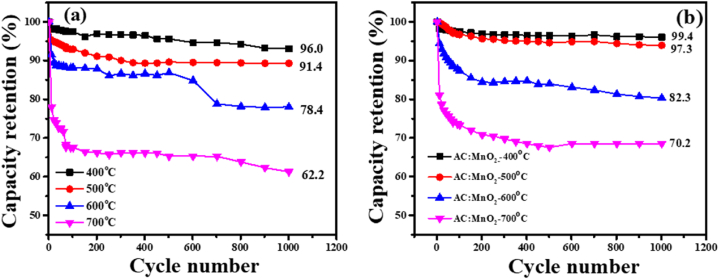
Fig. 10a: Capacity retention (%) of AC-electrodes,Fig. 10 b: Capacity retention (%) of AC:MnO2-electrodes.Fig. 10
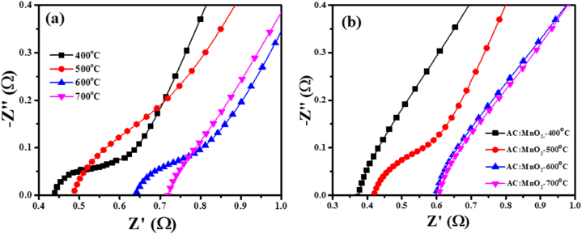
Fig. 11a and 11. b: Nyquist plots of the AC-electrodes and AC:MnO2-electrodes at the perturbation signal with 10 mV AC voltage in 6 M KOH aqueous solution at frequencies ranging from 100 KHz to 0.1 Hz.Fig. 11
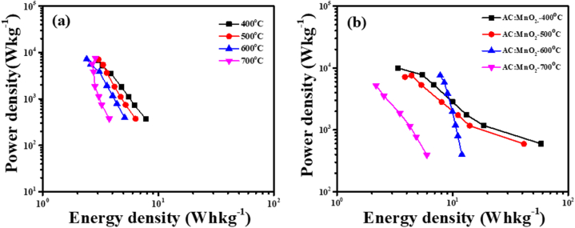
Fig. 12a and b: Ragone plot of AC-electrodes and AC:MnO2-electrodes.Fig. 12
Comparison of Discharge Time and Specific Capacitance for Activated carbon (AC) and Hybrid-composite-electrodes at Different carbonization temperatures.
AC-Electrodes
Discharge time (s)
Specific Capacitance (Fg−1)
Hybrid-composite-Electrodes
Discharge time (s)
Specific Capacitance (Fg−1)
AC-400°C
110
184.4
AC:MnO2-400°C
490
491.0
AC-500°C
95
137.4
AC:MnO2-500°C
400
366.3
AC-600°C
68
87.3
AC:MnO2-600°C
120
103.0
AC-700°C
45
41.1
AC:MnO2-700°C
65
69.4
Specific capacitance, energy density, power density, capacity retention (%), and ESR of AC-400°C-electrode and AC:MnO2-electrodes.
AC-Electrodes
Energy density (Whkg−1)
Power density (Wkg−1)
Hybrid-composite-Electrodes
Energy density (Whkg−1)
Power density (Wkg−1)
AC-400 °C
4.2
142.4
AC:MnO2-400 °C
25.3
187.3
AC-500 °C
3.1
127.4
AC:MnO2-500 °C
18.3
164.4
AC-600 °C
2.2
112.0
AC:MnO2-600 °C
5.2
156.1
AC-700 °C
1.3
104.2
AC:MnO2-700 °C
2.5
149.5
References
1.Simon P., Gogotsi Y. Materials for electrochemical capacitors. Nat. Mater. 2008;7:845–854. doi: 10.1038/nmat2297.2.Miller J.R., Simon P. Electrochemical capacitors for energy management Science. 2008;321(5889):651–652. doi: 10.1126/science.1158736.3.G. Renu, S.J. Thilakar,.D. Narasimhan Centre for Floristic Research, Department of Botany, Madras Christian College, Tambaram.4.Reddy V.L. Synthesis of NiO nanoparticles prepared via a green process using Azadirachta indica. Morinda citrifolia, and Terminalia elliptica for biological applications BioNanoScience. 2023;13(3):1184–1196.5.Conway B.E. Transition from “supercapacitor” to “battery” behavior in electrochemical energy storage. J. Electrochem. Soc. 1999;138:1539–1548.6.Li P., Yang C., Jiang Z., Jin Y., Wu W. Lignocellulose pretreatment by deep eutectic solvents and related technologies: a review. J. Bioresour. Bioprod. 2023;8(1):33–44.7.Jagtoyen M., Derbyshire F. Activated carbons from yellow poplar and white oak by H3PO4 activation Carbon. 1998;36:1085–1097.8.Pandolfo A.G., Hollenkamp A.F. Carbon properties and their role in supercapacitors. J. Power Sources. 2006;157(1):11–27.9.Wang G., Wang H., Lu X., Ling Y., Yu M., Zhai T., Tong Y., Li Y. Solid-state supercapacitor based on activated carbon cloths exhibits excellent rate capability. Adv. Mater. 2014;26:2676–2682. doi: 10.1002/adma.201304756.10.Zuo Y., Feng J., Soyol-Erdene T.O., Wei Z., Hu T., Zhang Y., Tang W. Recent advances in wood-derived monolithic carbon materials: synthesis approaches. modification methods and environmental applications Chemical Engineering Journal. 2023;46311.Zhang L.L., Zhao X.S. Carbon based materials as supercapacitor electrodes. Chem. Soc. Rev. 2009;38:2520–2531. doi: 10.1039/b813846j.12.Shellikeri A., Yturriaga S., Zheng J.S., Cao W., Hagen M., Read J.A., Joe T.R., Zheng J.P. Hybrid lithium-ion capacitor with LiFePO4/AC composite cathode–long term cycle life study, rate effect and charge sharing analysis. J. Power Sources. 2018;392:285–295.13.Fu M., Chen W., Zhu X., Yang B. Q. Liu Crab shell derived multi-hierarchical carbon materials as a typical recycling of waste for high performance supercapacitors Carbon. 2019;141:748–757.14.Chen W., Fan Z., Gu L., Bao X., Wang C. Enhanced capacitance of manganese oxide via confinement inside carbon nanotubes Chem. Commun. Now. 2010;46:3905–3907. doi: 10.1039/c000517g.15.Zhu Y., Murali S., Stoller M.D., Ganesh K.J., Cai W., Ferreira P.J., Pirkle A., Wallace R.M., Cychosz K.A., Thommes M., Su D., Stach E.A., Ruoff R.S. Carbon-based supercapacitors produced by activation of graphene. Science. 2011;332:1537–1541. doi: 10.1126/science.1200770.16.Wu J., Mahajan A., Riekehr L., Zhang H., Yang B., Meng N., Zhang Z. H. Yan Perovskite Srx (Bi1− xNa0. 97− xLi 0. 03) 0.5 TiO3 ceramics with polar nano regions for high power energy storage. Nano Energy. 2018;50:723–732.17.Shrestha D., Maensiri S., Wongpratat U., Lee S.W., Rajbhandari A. Nyachhyon Shorea robusta derived activated carbon decorated with manganese dioxide hybrid composite for improved capacitive behaviors. J. Environ. Chem. Eng. 2019;718.Kim G.C., Kim J.H. Changes in mechanical properties of wood due to 1 year outdoor exposure. J. Korean Wood Sci. Techno. 2020;48(1):12–21.19.Shrestha D., Rajbhandari Nyachhyon A. The effects of different activating agents on the physical and electrochemical properties of activated carbon electrodes fabricated from wood-dust of Shorea robusta. Heliyon. 2021;7 doi: 10.1016/j.heliyon.2021.e07917.20.Huang C., Chui Y., Gong M., Chana F. Mechanical behavior of wood compressed in radial direction: Part II. Influence of temperature and moisture content. J. Bioresour. Bioprod. 2020;5(4):266–275.21.Shrestha D. Evaluation of physical and electrochemical performances of hardwood and softwood derived activated carbon for supercapacitor application mat. Sci. Ener. Techno. 2022;5:353–365.22.Shrestha D. Activated carbon and its hybrid composites with manganese (IV) oxide as effectual electrode materials for high performance supercapacitor Arabian. J. Chem. 2022;15(7)23.Shrestha D. Nanocomposite electrode materials prepared from Pinus roxburghii and hematite for application in supercapacitors. J. Korean Wood Sci. Techno. 2022;50(4):219–236.24.Shrestha D., Gyawali G., Rajbhandari A. Preparation and characterization of activated carbon from waste sawdust from saw mill. J. Sci. Technol. (Peshawar) 2018;22(2):103–108.25.Ding N., Schnell J., Li X., Yin X., Liu Z., Zong Y. Electrochemical impedance spectroscopy study of sulfur reduction pathways using a flexible, free-standing and high-sulfur-loading film. Chem. Eng. J. (Lausanne) 2021;41226.Dai C., Yang J., Qu S., Jin T., Ma F., Shao J. H3PO4 solution hydrothermal carbonization combined with KOH activation to prepare argy wormwood-based porous carbon for high-performance supercapacitors Appl. Surf. Sci. 2018;444:105–117.27.Shrestha D. Applications of functionalized porous carbon from bio-waste of Alnus nepalensis in energy storage devices and industrial wastewater treatment. Heliyon. 2023;9(11) doi: 10.1016/j.heliyon.2023.e21804.28.Atchudan E., Edison T.J.N.I., Perumal S., Vinodh R., Babu R.S., Sundramoorthy A.K., Renita A.A., Lee Y.R. Facile synthesis of nitrogen-doped porous carbon materials using waste biomass for energy storage applications. Chemosphere. 2022;289 doi: 10.1016/j.chemosphere.2021.133225.29.Mohammad Y.G., Fatemeh A. Effect of the second heat treatment on the porosity and conductivity of a template-synthesized carbon material for use in supercapacitor electrodes. Solid State Sci. 2022;12830.Hirsch S.J., Winter L., Grund T., Lampke T. Heat treatment influencing porosity and tensile properties of field assisted sintered AlSi7Mg0.6. Materials. 2022;15(7):2503. doi: 10.3390/ma15072503.31.Heimböckel R., Hoffmann F., Fröba M. Insights into the influence of the pore size and surface area of activated carbons on the energy storage of electric double layer capacitors with a new potentially universally applicable capacitor model. Phys. Chem. Chem. Phys. 2019;21:3122–3133. doi: 10.1039/c8cp06443a.32.Pathak I., Acharya D., Chhetri K., Lohani P.C., Subedi S., Muthurasu A., Kim T., Ko T.H., Dahal B., Kim H.Y. Ti 3 C 2 T x MXene embedded metal–organic framework-based porous electrospun carbon nanofibers as a freestanding electrode for supercapacitors. J. Mater. Chem. A. 2023;11(10):5001–5014.33.Enders A.A., North N.M., Fensore C.M., Velez-Alvarez J., Allen H.C. Functional group identification for FTIR spectra using image-based machine learning models. Anal. Chem. 2021;93(28):9711–9718. doi: 10.1021/acs.analchem.1c00867.34.Reljic S., Martinez-Escandell M., Silvestre-Albero J. Effect of porosity and surface chemistry on CO2 and CH4 adsorption in S-doped and S-/O-co-Doped porous carbons. Journal of Carbon research C. 2022;8(3):41.35.Periyasamy S., Isabel J.B., Kavitha S., Karthik V., Mohamed B.A., Gizaw D.G., Sivashanmugam P., Aminabhavi T.M. Recent advances in consolidated bioprocessing for conversion of lignocellulosic biomass into bioethanol. A review Chemical Engineering Journal. 2023;45336.Wu D., Xie X., Zhang J., Ma Y., Hou C., Sun X., Yang X., Zhang Y., Kimura H., Du W. Embedding NiS nanoflakes in electrospun carbon fibers containing NiS nanoparticles for hybrid supercapacitors. Chem. Eng. J. 2022;44637.Wang I.J., Yang Y., Huang Z.H., Kang F. Effect of temperature on the pseudocapacitive behavior of freestanding MnO2@carbon nanofibers composites electrodes in mild electrolyte. J. Power Sources. 2013;224:86–92.38.Kondrat S., Perez C.R., Presser C.R., Gogotsi Y., Kornyshev A.A. Effect of pore size and its dispersity on the energy storage in nanoporous supercapacitors Ener. Environ. Sci. 2012;5:6474–6479.39.Fares A.M., Kippke M., Rashed M., Klumpner C., Bozhko S. Development of a smart supercapacitor energy storage system for aircraft electric power systems. Energies. 2021;14:8056.40.Wang J.W., Chen Y., Chen B.Z. A synthesis method of MnO2/activated carbon composite for electrochemical supercapacitors. J. Electrochem. Soc. 2015;162(8):A1654–A1661.41.Navarro G., Blanco M., Torres J., Nájera J., Santiago A., Santos-Herran M., Ramírez D., Lafoz M. Dimensioning methodology of an energy storage system based on supercapacitors for grid code compliance of a wave power. Plant Energies. 2021;14:985.42.Lu H., Dai W., Zheng M., Li N., Ji G., Cao J. Electrochemical capacitive behaviors of ordered mesoporous carbons with controllable pore sizes. J. Power Sources. 2012;209(1):243–250.43.Toupin M., Bélanger D., Hill I.R., Quinn D. Performance of experimental carbon blacks in aqueous supercapacitors. J. Power Sources. 2005;140:203–210.44.Qizhao L., An H., Shihao X., Mengyu M., Tong L., Bin C., Kunpeng S., Bin T., Xuejiao H., Lu H. J. Haifeng Utilization of low-grade heat for desalination and electricity generation through thermal osmosis energy conversion process Chemical Engineering Journal. 2022;452(5)45.Jie L., Deqiu Z., Yinshuang W., Shuo W., Li H. Battery thermal management systems (BTMs) based on phase change material (PCM) A comprehensive review Chemical Engineering Journal. 2021;430(9)46.Talaie E., Bonnick P., Sun X., Pang Q., Liang X., Nazar L.F. Methods and protocols for electrochemical energy storage materials research Chemistry of Materials. 2017;29(1):90–105.47.Numan A., Bibi F., Omar F.S., Ullah S., Al-Hartomy O.A., Khalid M. Harvesting enhanced electrochemical performance of mixed structured nickel cobalt phosphate for energy storage application. J. Alloys Compd. 2022;92748.Cakici M., Kakarla R.R., Alonso-Marroquin F. Advanced electrochemical energy storage supercapacitors based on the flexible carbon fiber fabric-coated with uniform coral-like MnO2 structured electrodes. Chem. Eng. J. 2017;309:151–158.49.Harris A.R., Grayden D.B., John S.E. Electrochemistry in a two- or three-electrode configuration to understand monopolar or bipolar configurations of platinum bionic implants. Micromachines. 2023;14(4):722. doi: 10.3390/mi14040722.50.Elmorshedy M.F., Elkadeem M., Kotb K.M., Taha I.B., Mazzeo D. Optimal design and energy management of an isolated fully renewable energy system integrating batteries and supercapacitors. Energy Convers. Manag. 2021;245